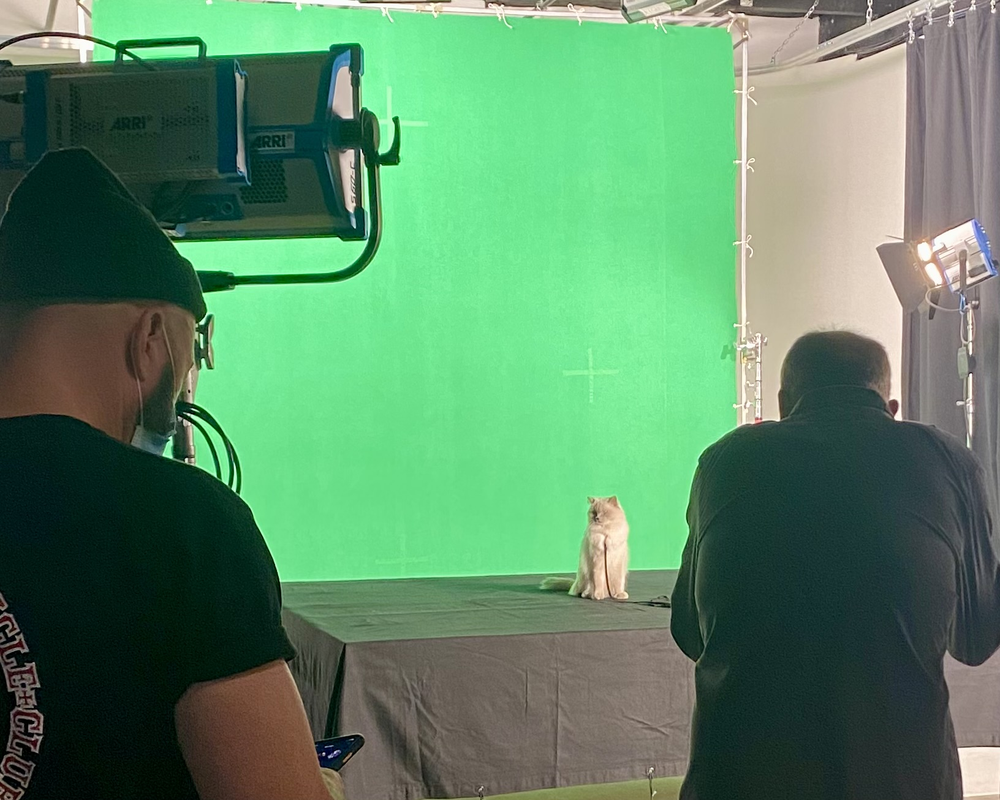
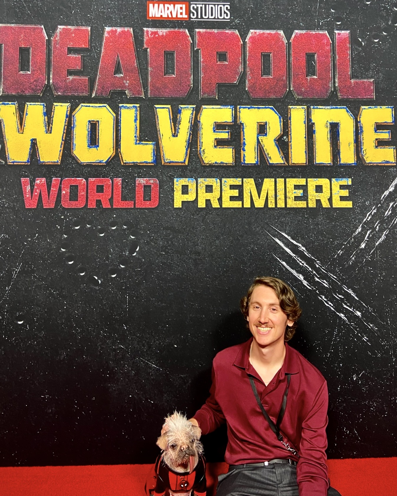

About Toth Movie Animals
Based near Los Angeles, Toth Movie Animals is a professional animal training and film services company with deep roots in the industry. Our mission is to enrich filmmakers' creative visions by bringing narratives to life with meticulously trained and well-cared-for animals.
Founded by Derek Toth, a third-generation animal trainer, Toth Movie Animals embodies a family tradition of professional animal handling and environmental stewardship. Immersed in this legacy from an early age, Derek developed a profound respect for wildlife, guiding his ventures with these principles. With over a decade of experience, he is well-versed in handling diverse production environments, including venomous snake management and location scouting.
We are committed to delivering seamless, professional service, ensuring animal safety and respect on every project. We strive to create a safe, nurturing environment for animals while guaranteeing exceptional service and professionalism on every film set.
Off the set, Derek maintains a close bond with nature through activities like hiking, environmentalism, and animal activism. His enduring passion for wildlife fuels our mission at Toth Movie Animals: to enrich storytelling in film while championing animal welfare.
Our Services
Animal Training Services
We offer expert animal training services for film productions as well as personalized private training sessions for pets, ensuring their full potential is reached in a safe and nurturing environment.

Animal Safety Consulting
Ensuring the welfare of animals on set is paramount. Our Animal Safety Consulting service, in collaboration with the Animal Protection Agency (APA), provides comprehensive oversight for film and TV productions, press junkets, as well as live events. We are dedicated to creating a secure environment where animals can work alongside humans harmoniously, promoting their well-being at every stage of production.

Location Scouting and Wildlife Abatement
We help film productions find the perfect locations for their projects while ensuring rattlesnake and wildlife abatement for a safe and seamless on-set experience.

Portfolio
Some of Derek Toth's notable credits include commercials for Apple, Versace, Nationwide Insurance, Levi's, Brooks Brothers, Dockers, Target, Mercy Health, Georgia Electric, Tinder, Skechers, Dominos, Khy by Kylie Jenner, and Olipop; TV shows like American Horror Story, The Rookie, S.W.A.T., and 911: Lonestar; films such as Palm Springs, Birds of Prey, About My Father, White Men Can't Jump, Deadpool, and Wolverine; as well as various foreign films.
Contact Us
If you have any questions or would like to inquire about our services, please don't hesitate to reach out.
At Toth Movie Animals, we believe in the power of storytelling and the distinctive voice of independent cinema. We are dedicated to working closely with indie filmmakers, understanding their financial constraints, and offering flexible, budget-friendly solutions without compromising on quality or authenticity.